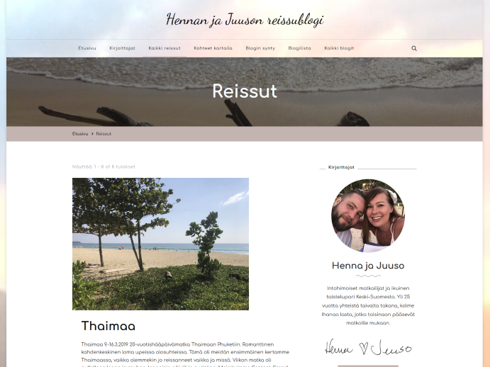
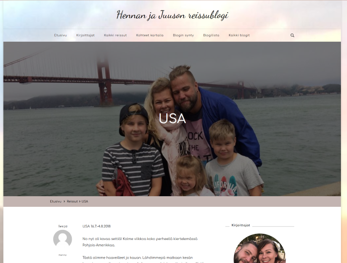

Hennan ja Juuson reissublogi
Hyvän mielen matkakertomuksia toteutettuna Wordpress-julkaisujärjestelmällä. Tämän sivuston toteutin Web-julkaisujärjestelmät-kurssin harjoitustyönä, mutta materiaali on syntynyt vuosien 2015-2019 aikana todellisten reissujemme myötä. Pohjana käytin Blossom Travels -teemaa, jota muokkasin tarpeideni mukaan.

